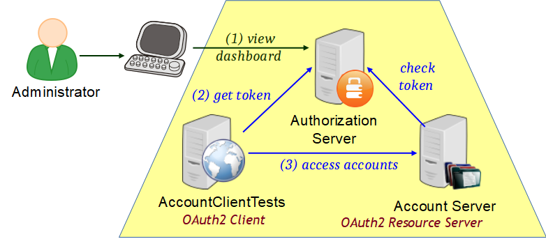

Purpose
In this lab, you will gain experience with using Spring Security to secure the REST Account Server using OAuth2.
Learning Outcomes
What you will learn:
- How to integrate OAuth2 into your application
Specific subjects you will gain experience with:
- Writing an OAuth2 Authorization Server and Resource Server
OAuth2RestTemplate
You will be using the 61-security-oauth2 project, which you have used in the previous lab.
Estimated time to complete: 25 minutes.
Use Case
There are 2 parts to this lab:
- Convert the Authorization Server into an OAuth2 Authorization Server and configure it.
- Convert the Account Server into an OAuth2 Resource Server

- Unusually the OAuth2 client is our JUnit test.
As this project contains 2 executables, they cannot both use
application.properties, so we set spring.config.name for each
of them to define a different property file to use:
AuthorizationServerusesauth-server.propertiesSecureRestAccountsApplicationusesaccount-server.properties
Quick Instructions
If you are already knowledgeable with the lesson concepts, you may consider jumping right to the code, and execute the lab by following the embedded TODO comments (tasks). Instructions on how to view them are here.
If you aren’t sure, try the TODO instructions first and refer to the lab instructions by TODO number (below) if you need more help.
Instructions
Create an OAuth2 Authorization Server
The Authorization Server is intended to be used for OAuth2 authorization. That is the goal of this section.
TODO-01 : Annotate AuthorizationServer
- Annotate the AuthorizationServer class to make it work as an OAuth2 authorization server.
TODO-02 : Enable AuthorizationServerConfigurer Bean
- An
AuthorizationServerConfigurerhas already been partly defined for you in theAuthorizationServerclass. However it is not being used as a bean yet. - Uncomment its
@Beanannotation so Spring will create one.
TODO-03 : Specify Valid Token Access
-
Use the
configure(AuthorizationServerSecurityConfigurer security)method to specify that any process using the authorization server to fetch or validate tokens must have "Trusted-Client" role. -
Suggestions:
- You need to use
hasAuthority(...) - The
ROLE_TRUSTED_CLIENTconstant may be useful here. - Refer to the slides for an example.
- You need to use
TODO-04 : Register Resource server and Client to the authorization server
-
There are two actors that need to talk the authrization server: The Resource server (actually our account server) and the Client (which is actually our JUnit tests in
AccountClientTests). -
Their credentials are:
Property Value User Constants.ACCOUNT_SERVERPassword encoded "secret" Grant CLIENT_CREDENTIALSAuthority ROLE_TRUSTED_CLIENTUser Constants.ACCOUNT_TESTER_CLIENTPassword encoded "secret" Grant CLIENT_CREDENTIALSScopes ACCOUNT_READ,ACCOUNT_WRITE -
Refer to the slides for an example.
-
Start the AuthorizationServer
TODO-05 : Test the code by getting a Token manually
-
Open
AuthorizationServerTests. Review the methodgetToken()- this simulates what a Client does to get an OAuth2 token. The comments describe the HTTP request to send. -
Remove
@Disabledfrom thecanGetToken()method and run the test. It should work if your configuration is correct.- If not, edit
auth-server.propertiesand uncomment the logging.level properties to enableDEBUGlogging for both Spring Security and Boot. - Rerun the test and see if the log output helps you fix the server.
- Change
DEBUGtoINFOonce it works.
- If not, edit
TODO-06 : Check a Token manually
-
Still in
AuthorizationServerTests, review the methodcheckToken()- this simulates what a resource server does to validate an OAuth2 token. The comments describe the HTTP request to send. -
Remove
@Disabledfrom thecanUseToken()method and run the test. It should work.
TODO-07 : Check URLs used on the AuthorizationServer
-
Access http://localhost:1111/admin/httptrace and search for "/oauth" string.
-
Note the URLs invoked to check and fetch tokens.
Make the Account Server an OAuth2 Resource Server
Finally we need to make the Account Server a Resource Server so we can secure access to its REST URLs using OAuth2.
TODO-08 : Annotate Account Server Application.
-
Run
SecureRestAccountsApplication. -
If you try and access http://localhost:8080, you will be forced to login with a username and password because Spring Boot has set up default security. You do not need to login.
-
Manual login is not useful for a REST server. Instead we will use OAuth2.
-
Add the necessary annotation to
SecureRestAccountsApplication.
TODO-09 : Configure access control
A ResourceServerConfigurer configuration bean has been created
for you.
-
TODO-09a : Review the code. The
configure(HttpSecurity http)sets out the access restrictions for URLs- Access to
GETrequests requiresaccount.readscope. - Access to
POSTrequests requiresaccount.writescope.
- Access to
-
TODO-09b : If you got the configuration in the
AuthorizationServerConfigurerinAuthorizationServer.javacorrect, you gave theACCOUNT_TESTER_CLIENTthe scopesACCOUNT_READ("account.read") andACCOUNT_WRITE("account.write"). These constants are defined at the top of the class. -
TODO-09c : Return to
SecureRestAccountsApplication.javaand enable theResourceServerConfigurerbean by uncommenting the@Beanannotation.
Note: A scope is another type of "Authority". (Roles are the most familiar type of Authority). Authority names are whatever you want them to be. There are no predefined Authority names in Spring Security.
TODO-10 : Check the account-server is restricted
-
Run
SecureRestAccountsApplicationas a Spring Boot application. -
If you try and access http://localhost:8080 you should now get an "authentication is required" or "access denied" response, depending on your browser.
TODO-11 : Access Resource Server using OAuth2 to validate
-
Return to the
AuthorizationServerTestsand findgetAccountUsingToken. This sends an authorized request for data using an access token from the authorization server. -
Find
canGetAccountUsingToken()and remove@Disabled. Run the test, it should pass.
TODO-12 : Review Resource server OAuth 2 configuration
- Open
account-server.propertiesfile and review thesecurity.oauth2.client.*properties.
Run client
The AccountClientTests we used in the REST lab are the OAuth2
Client in this scenario.
TODO-13 : Configure the Client
- Open
client-oauth2.propertiesfile and review thesecurity.oauth2.client.*properties. These allow the Client to authenticate with the Authentication Server and get the access token needed to access the account-server.
TODO-14 : Run the AccountClientTests. They should all pass.
Summary
In this lab, we implemented OAuth2 authorization by setting up an OAuth2 Authorization Server and made the Account Server an OAuth2 Resource Server.
We ran the OAuth2 "dance" manually using a standard RestTemplate
and then accessed the secured Account Service transparently using
Spring Security's OAuth2RestTemplate.
Congratulations, you are done with the lab!